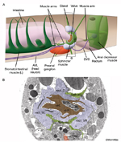
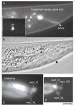
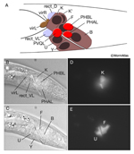
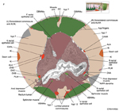
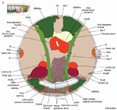

Handbook - Hermaphrodite
Alimentary System Rectum and Anus see also Overview Pharynx Intestine
3 Rectal gland
6 Motor neurons of defecation
Figures  RectFIG 1 - The hindgut  RectFIG 2 - Intestinal-rectal valve and the rectal gland  RectFIG 3A-E - Development of the rectum  RectFIG 3F - Mid-rectum  RectFIG 3G - Posterior rectum